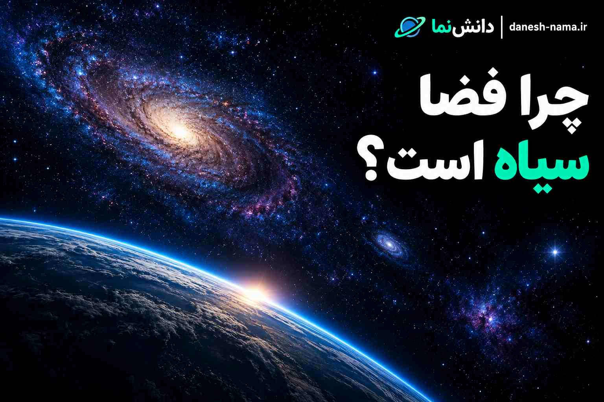

چرا فضا سیاه است؟ دلیل سیاه بودن آسمان در فضا
وقتی به تصاویر فضانوردان یا عکسهای گرفتهشده از فضا نگاه میکنیم، معمولاً یک چیز توجه ما را جلب میکند: آسمان کاملاً سیاه است. اما چرا در فضا آسمان آبی نیست؟ اگر خورشید در فضا میدرخشد و ستارههای بیشماری در جهان وجود دارند، پس چرا اطراف آنها مانند آسمان زمین روشن دیده نمیشود؟ پاسخ اصلی به وجود یا نبود جو و نحوه انتشار نور مربوط است.
نور چگونه در فضا حرکت میکند؟
نور در خلأ میتواند در خط مستقیم حرکت کند. برای اینکه مسیر نور تغییر کند یا نور در جهات مختلف پخش شود، معمولاً باید با مادهای مانند گاز، گردوغبار یا ذرات برخورد داشته باشد. در فضای میان سیارات و ستارهها، چگالی ماده بسیار پایین است. بنابراین نور خورشید مانند چیزی که در جو زمین اتفاق میافتد، بهطور گسترده در تمام جهات پخش نمیشود.
به همین دلیل اگر یک فضانورد در مدار زمین به بخش بزرگی از آسمان نگاه کند، پسزمینه میتواند سیاه باشد، در حالی که نور خورشید همچنان به تجهیزات یا لباس فضانورد میتابد.
چرا آسمان زمین آبی است؟
زمین یک لایه ضخیم از جو دارد. نور خورشید هنگام عبور از جو با مولکولهای گازهای موجود در هوا برخورد میکند و بخشی از آن در جهات مختلف پراکنده میشود. یکی از مهمترین فرآیندهای این پراکندگی، پراکندگی رایلی یا Rayleigh scattering نام دارد.
طول موجهای کوتاهتر نور، مانند نور آبی، بیشتر از طول موجهای بلندتر مانند قرمز پراکنده میشوند. به همین دلیل نور آبی در آسمان از جهات مختلف به چشم ما میرسد و آسمان در طول روز آبی دیده میشود.
پس تفاوت اصلی این است: زمین جو دارد؛ فضای بیرونی تقریباً خلأ است. همین تفاوت ساده تأثیر بزرگی بر ظاهر آسمان دارد.
اگر خورشید در فضا هست، چرا آسمان روشن نیست؟
خورشید یک منبع بسیار قدرتمند نور است، اما روشن بودن خود خورشید با روشن بودن پسزمینه آسمان دو موضوع متفاوت هستند. روی زمین، وقتی خورشید میتابد، نور آن وارد جو میشود و مولکولهای هوا آن را در جهات مختلف پراکنده میکنند. در نتیجه حتی قسمتهایی از آسمان که مستقیماً مقابل خورشید نیستند نیز روشن میشوند.
در فضا چنین لایه متراکمی از هوا وجود ندارد. بنابراین نور خورشید در مسیر خود حرکت میکند، اما فضای اطراف مسیر نور لزوماً مانند آسمان زمین روشن نمیشود.
چرا ستارهها در فضای سیاه دیده میشوند؟
ستارهها خودشان نور تولید میکنند. نور آنها در فضای میانستارهای حرکت میکند و در نهایت بخشی از آن به تلسکوپها یا چشم ما میرسد. از آنجا که فضای اطراف تقریباً فاقد جو است، نور ستارهها مانند نور خورشید در جو زمین در تمام جهات پراکنده نمیشود. به همین دلیل ستارهها میتوانند به صورت نقاط نورانی روی زمینهای بسیار تاریک دیده شوند.
آیا فضانوردان در فضا روز و شب دارند؟
مفهوم روز و شب برای یک فضانورد کاملاً با چیزی که روی سطح زمین تجربه میکنیم یکسان نیست. برای مثال، فضانوردی که در مدار پایین زمین قرار دارد، ممکن است در مدت کوتاهی از سمت روشن زمین به سمت تاریک آن حرکت کند. اما حتی وقتی خورشید در آسمان او قرار دارد، پسزمینه آسمان همچنان میتواند سیاه دیده شود؛ زیرا نبود جو باعث میشود نور خورشید مانند زمین در آسمان پخش نشود.
آیا روی ماه هم آسمان سیاه است؟
بله. ماه تقریباً جو بسیار ناچیزی دارد و مانند زمین دارای جوی ضخیم نیست. به همین دلیل فضانوردان مأموریتهای آپولو حتی هنگام حضور در سمت روشن ماه، آسمان را سیاه مشاهده کردند. این موضوع یکی از نمونههای واضح تفاوت میان یک جهان دارای جو و محیط تقریباً بدون جو است.
مقایسه آسمان زمین و فضا
| ویژگی | زمین | فضای بیرونی |
|---|---|---|
| وجود جو | دارد | تقریباً ندارد |
| پراکندگی گسترده نور | زیاد | بسیار کم |
| رنگ معمول آسمان | آبی | تاریک و سیاه |
| ستارهها | روزها معمولاً بهسختی دیده میشوند | روی پسزمینه تاریک قابل مشاهدهاند |
| پراکنده شدن نور خورشید | توسط جو | بسیار کمتر |
آیا فضا کاملاً سیاه است؟
نه دقیقاً. «سیاه» بودن آسمان فضا به این معنی نیست که هیچ نوری در جهان وجود ندارد. ستارهها، کهکشانها، غبار میانستارهای و منابع مختلف تابش در جهان وجود دارند. حتی فضا یک پسزمینه بسیار کمنور از تابشها و نورهای مختلف دارد که با چشم انسان به شکل یک آسمان روشن دیده نمیشود.
اندازهگیریهای فضاپیماهایی مانند New Horizons نیز نشان دادهاند که فضای دوردست کاملاً بدون نور نیست؛ اما پسزمینه آن بسیار تاریک است.
پارادوکس اولبرز چیست؟
یک سؤال جالب دیگر مطرح میشود: اگر جهان پر از ستاره است، چرا وقتی در هر جهت نگاه میکنیم، تمام آسمان از نور ستارهها پر نشده است؟ این پرسش در تاریخ نجوم با نام پارادوکس اولبرز شناخته میشود.
یکی از بخشهای مهم پاسخ این است که جهان قابل مشاهده سن و اندازه محدودی دارد. نور برای رسیدن از اجرام بسیار دور به ما به زمان نیاز دارد. بنابراین تمام نور تمام ستارههای موجود در جهان لزوماً هنوز به زمین نرسیده است. همچنین انبساط جهان باعث کشیده شدن طول موج نور بسیاری از اجرام دوردست میشود؛ در نتیجه بخشی از تابش آنها از محدوده نور مرئی خارج میشود.
چرا آسمان مریخ با زمین فرق دارد؟
رنگ آسمان یک سیاره به ویژگیهای جو و ذرات موجود در آن بستگی دارد. مریخ جوی بسیار رقیقتر از زمین دارد و مقدار زیادی ذرات ریز گردوغبار در جو آن وجود دارد. این ذرات باعث میشوند نحوه پراکندگی نور با زمین متفاوت باشد. به همین دلیل آسمان مریخ میتواند در طول روز رنگهایی متمایل به نارنجی یا قرمز داشته باشد.
اگر روی زمین جو نداشتیم چه اتفاقی میافتاد؟
اگر زمین جوی بسیار ناچیزی داشت، دیگر آسمان آبی مانند امروز وجود نداشت. حتی در حضور خورشید، پسزمینه آسمان بسیار تاریکتر دیده میشد؛ چون ماده کافی برای پراکنده کردن نور خورشید در تمام جهات وجود نداشت. البته خود سطح زمین همچنان میتوانست در سمت رو به خورشید بهشدت روشن شود.
ارتباط این موضوع با مقاله «چرا آسمان آبی است؟»
دو سؤال «چرا آسمان زمین آبی است؟» و «چرا فضا سیاه است؟» در واقع دو روی یک موضوع هستند. در زمین، جو باعث پراکندگی نور خورشید میشود و آسمان را روشن میکند. در فضای بیرونی، نبود جو متراکم باعث میشود این پراکندگی بسیار کمتر باشد. اگر میخواهید درباره این موضوع بیشتر بدانید، مقاله چرا آسمان آبی است؟ را در دانشنما بخوانید.
مطالب مرتبط در دانشنما
- چرا آسمان آبی است؟
- خورشید چیست؟
- ستارهها چگونه شکل میگیرند؟
- کهکشان راه شیری چیست؟
- منظومه شمسی چیست؟
- سیاهچاله چیست؟
جمعبندی
دلیل اصلی سیاه دیده شدن آسمان فضا این است که فضای بیرونی برخلاف زمین، جو متراکمی ندارد که نور خورشید را در همه جهات پراکنده کند. روی زمین، مولکولهای جو باعث پراکندگی نور و آبی شدن آسمان میشوند. اما در فضا، نور میتواند در مسیر مستقیم خود حرکت کند و اطراف آن مانند آسمان زمین روشن نشود. بنابراین ممکن است یک فضانورد همزمان خورشید بسیار درخشان را ببیند و در جهت دیگری از آسمان، پسزمینهای کاملاً تاریک مشاهده کند.
نظرات کاربران